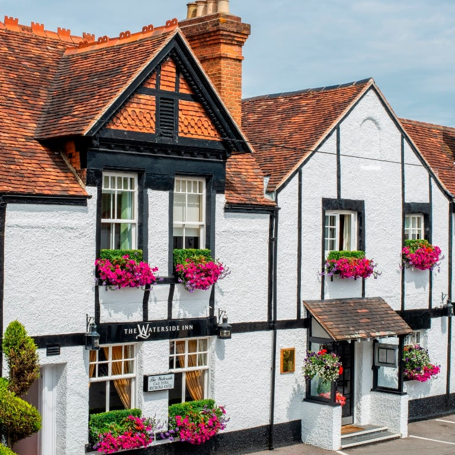

★★★ · 40 yrsClassical · Riverside · Roux dynasty
The Waterside Inn
The strongest consistency signal in UK fine dining outside London[7]. The £140 prix-fixe lunch is the cheapest door into Bray's three-star tier[8]; booking a room guarantees a dinner table[4].